12
Other Floorplanning Commands
This chapter introduces you to the following additional Floorplanning commands that are used to develop a layout from a schematic.
- Edit Soft Blocks
- Load Physical View
- Create Soft Pins
- Snap Pins
- Analyze Connectivity
- Create Feedthrough Terminal Pins
- Creating Boundary Pins on Selected Shapes
- Level-1 Editing
- Pin Connectivity Setting
- Set Celltype
- Pin Alignments
These commands are not available in the Floorplanner menu. The commands discussed here are a part of Virtuoso Layout XL suite and are covered in detail in the Virtuoso Layout XL user guide.
Edit Soft Blocks
The Edit Soft Blocks command lets you modify the soft blocks in your design. Use the Floorplan – Soft Block Update – Edit Soft Blocks command to modify the attributes of individual soft blocks to take account of placement and connectivity requirements in your design. You can also access this command from Edit – Edit Soft Blocks. This command is recommended if you want to make changes that do not require the physical hierarchy to be regenerated. For more information on how to edit soft blocks, refer to the
Load Physical View
The Load Physical View command is used to import the predefined information from a source physical cellview into a current cellview. To do this, select Floorplan – Load Physical View. You can also access this command from File – Load Physical View. For more information on how to load physical view into current layout cellview, refer to the Virtuoso Layout Suite XL User Guide.
Create Soft Pins
After the physical hierarchy is configured, if you need to improve the connectivity of your design, you can create additional soft pins on your soft blocks. The FloorPlan – Connectivity – Create Soft Pins command lets you create, delete, and update soft pins for your soft blocks. You can also access this command from Create – Soft Pins. To know more on how to create soft pins, refer to the Virtuoso Layout Suite XL User Guide.
Snap Pins
The Snap Pins command is used to snap both top-level and level-1 pins to the grid appropriate to the block type. To snap all soft block pins, select Floorplan – Connectivity – Snap Pins. You can also access this command from Connectivity – Pins – Snap Pins.
At advanced nodes, this command provides additional options to snap pins to WSP grids.
For more information on snapping soft block pins, refer to the
Analyze Connectivity
Use the Analyze command to calculate the number of connections between each pair of selected instances, draw flight lines between each connected pair, and indicate the number of connections by displaying a numerical value on the flight lines. This is a command that generates information about connectivity and other useful design information. It is useful to find out the connectivity (the number of connections) of a block with other blocks, so that during manual floorplanning, you can keep the blocks that have more connectivity between them closer to each other.
To analyze the connectivity between instances:
-
Open the Analyze Connectivity form.
For this command, only the pre-selection mode is supported. You can select multiple blocks whose connectivity you want to examine. Use one of the following methods to open the Analyze Connectivity form:-
Choose Floorplan – Connectivity – Analyze.
- Choose Connectivity – Analyze.
- Click the Analyze Connectivity button on the Design Planner toolbar.
For more information, see Design Planner Toolbar.
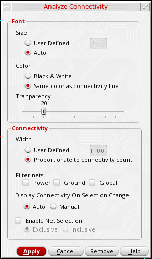 -
Choose Floorplan – Connectivity – Analyze.
-
In the Font section, specify the size of the flight lines. Set Size to one of the following values:
-
User Defined: Specify the absolute font size. If the value is
0, flight lines are displayed when you click Analyze, but numbers are not displayed. -
Auto (default): Adjusts the font size based on the number of connections. For example, if there are 47 connections between two devices, its label would have a larger font size than the label between devices with 14 connections.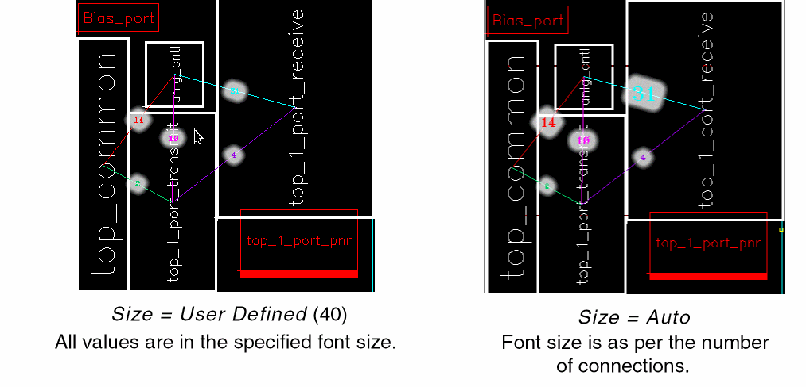
-
User Defined: Specify the absolute font size. If the value is
-
Specify the color of the text that is displayed on the flight lines. Set Color to either Black & White or Same color as connectivity line (default).
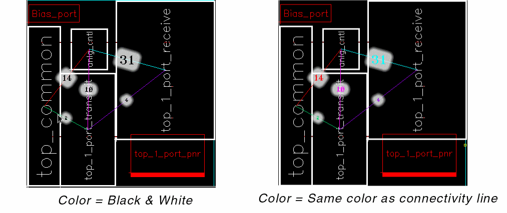 -
Adjust the transparency of the text on the screen. Drag the Transparency slider to specify a value. In the following example, the transparency value is increased to
65.
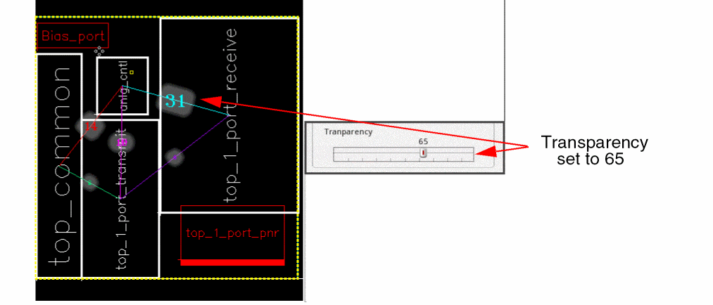 - In the Connectivity section, specify the width of the flight lines by setting Width to one of the following values:
- Select Filter nets to hide the connections to the selected type of nets - Power, Ground, and Global.
-
Set Display Connectivity to one of the following values:
- Auto: Enables dynamic selection of objects such as instances, PR boundary, and figGroups. Connectivity information is refreshed dynamically when you select a different object.
-
Manual: With this option selected, connectivity information does not change dynamically.
Click either Apply or Remove to remove previous highlights before you select new objects. Clicking Apply commits the current settings, whereas clicking Remove removes all existing highlights.
- Select Enable Net Selection to enable cross-selection of nets between the design canvas and the Navigator assistant. Therefore, when the Analyze Connectivity command is run, the nets highlighted in the design are automatically selected in the Navigator assistant. Use the following options to control net selection:
-
Click Apply to make changes.
You can also click Cancel to ignore the changes or Remove to delete all the flight lines and associated information within the selected boundary or between the selected instances.
Instead of selecting individual instances, you can also:
-
Select the PR boundary and analyze its connectivity: Connections from the design to all the instances in the design are considered, as shown below:
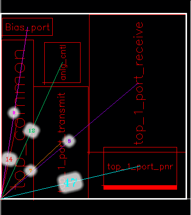 -
Select the PR boundary and one or more instance and analyze their connectivity: Connections between the design and the selected instances are considered, as shown below:
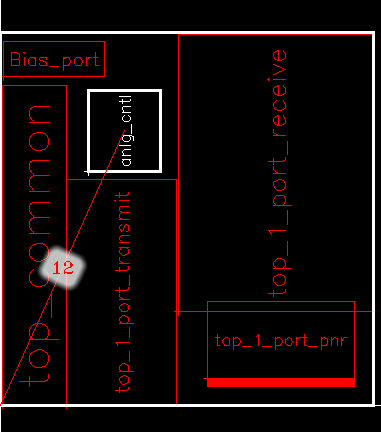 -
Select a figGroup and analyze its connectivity: All connections to the selected figGroup are considered, as shown below:
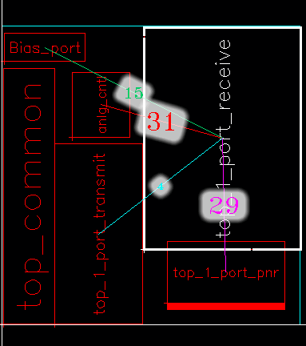
If an instance, figGroup, or PR boundary was not selected before choosing the Analyze command, the following message appears in the CIW.
*WARNING* VFP-4005: Could not analyze connectivity because neither the PR boundary nor any instance was selected. Select the PR boundary or the required instances, and rerun the command.
If you select only a single instance, Analyze displays all the instances and figGroups connected to that instance.
Certain designs may have a high number of connections between nets and insTerms. Before analyzing the connectivity in such designs, ensure that the number of connections of each net to instTerms is within the maximum terminals per net threshold value. If the value exceeds the threshold value, the corresponding net is ignored during computation of connectivity, and an INFO message is populated in the CIW for the corresponding net.
The adpEnvPinsPerNetThreshold variable defines the maximum terminals per net threshold value. Use the adpnlSetEnv API to set the adpEnvPinsPerNetThreshold variable such that the maximum number of terminals per net threshold value is higher than the number of connections of nets to instTerms in your design.
Create Feedthrough Terminal Pins
To create additional feedthrough pins in order to improve the connectivity of your design, the Create – Feedthrough Terminal Pins command is used. To know more on how to create feedthrough pins, refer to the Virtuoso Layout Suite XL User Guide.
Creating Boundary Pins on Selected Shapes
The vfpCreateBoundaryPinsForSelectedShapes SKILL API is used to create boundary pins on selected shapes. You need to select the shapes and run the API to create all boundary pins automatically, in one go. You specify the distance from the PRBoundary at which pins need to be created on the selected shapes. This distance will impact the size of pin created.
If the selected shapes are not associated with nets, only the boundary shapes are generated; no corresponding pin object is created.
Level-1 Editing
The Level-1 Editing allows you to edit the soft block without descending to hierarchy and also allows to edit soft blocks by looking at adjacent blocks. The commands used to do Level-1 Editing are as follows.
For more information on Level-1 editing commands and supported objects, refer to the Virtuoso Layout Suite XL User Guide.
Pin Connectivity Setting
The Pin Connectivity Setting command allows you to create, change, and delete strong and weak pins, and create must-connect pins. You can change a weak pin to a strong pin or vice-versa, or create must connect groups. To do this, select Connectivity – Pins – Pin Connectivity Setting command. For more information on this, refer to the Virtuoso Layout Suite XL User Guide.
Set Celltype
To set the celltype of blocks, click Tools -> Set Cell Type in the CIW. This command provides various features to search and set celltype for multiple cells. For more information, refer to Setting the Cell Type.
Pin Alignments
You align pins between blocks to get the shortest net length. The pin aligner is connectivity based and no specific pin selection is required, thereby, allowing multiple selection. The pin aligner aligns a list of target pins with respect to the position of a list of reference pins. Reference pins are the pins whose positions are used as the reference for alignment.
Reference pins can belong either to a block or to the top-level design. The block may be a soft block or a hard block because the pins of the reference block are not moved. Target pins are the pins that are moved by the alignment command. The target pins can either belong to a soft block or to the top-level design.
Use the Edit - Advanced - Align command to align pins. Alternatively, you can use the vfpAlignPins SKILL function. When you use the Edit - Advanced - Align command, the soft block master becomes editable automatically. To align pins, perform the following steps:
-
Choose the Edit – Advanced - Align command. The following form is displayed.
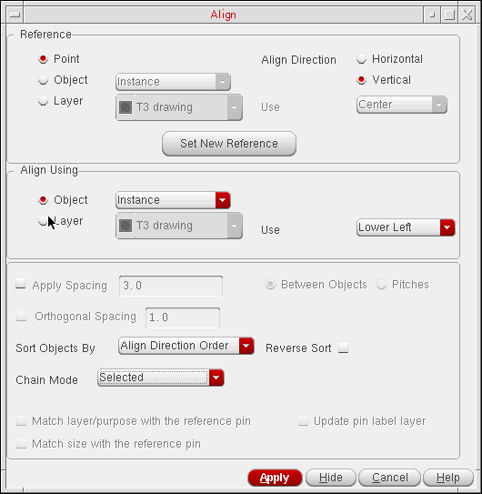 -
Select the Object option in the Reference section. Select Pins from the field next to the Object option.
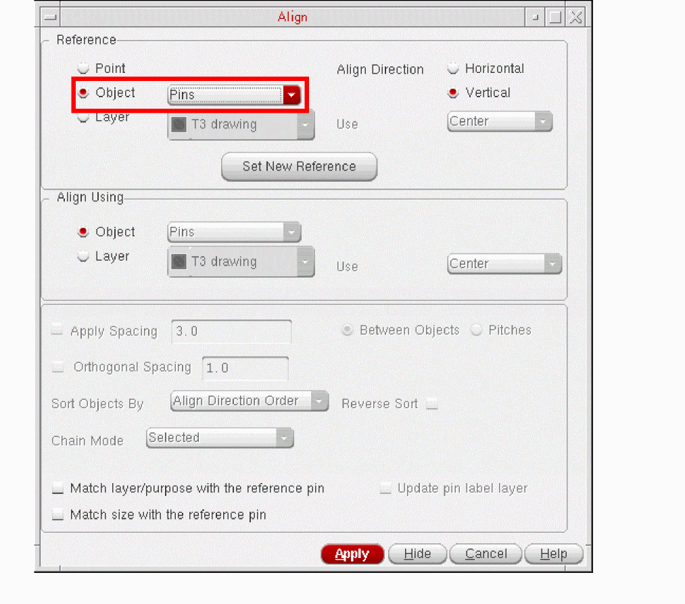The following prompt appears:Select reference pins/instances/top-level PRBoundary for pin-alignment:
-
To select the reference pins, click the corresponding blocks. You can select multiple blocks such as the top-level PRBoundary, a soft block, or a hard block as reference blocks. The pins in these blocks are selected as the reference pins.
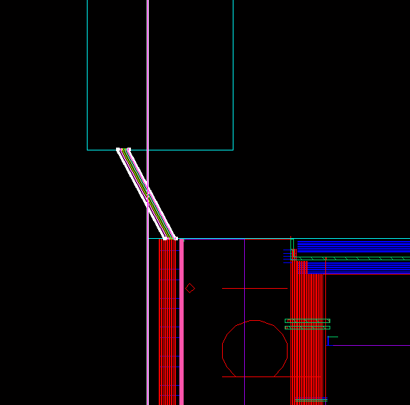You can select pins in different reference blocks as the reference pins. The pins in the target block will be aligned with respect to these reference pins in different reference blocks. -
Click the middle mouse button to switch to the target selection mode. A new message prompt appears:
Select target pins/instances/top-level PRBoundary for pin-alignment:
- To select the target pins, click the corresponding blocks.You can select multiple soft blocks, top-level pins, top-level PRBoundary or soft-block pins.
-
Click the middle mouse button or the Apply button in the Align form to mark the end of target selection.
The pin aligner aligns the target pins with respect to the selected reference pins. The following message prompt is displayed:
Select target pins/instances/top-level PRBoundary for pin-alignment:
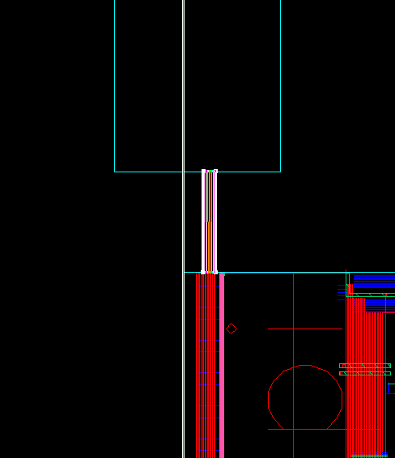 -
You can now select another target object to align with the same reference.
You can also click the Set New Reference button on the Align form to specify a new reference for aligning objects. This command resets the form and enables you to start again by selecting a new reference.
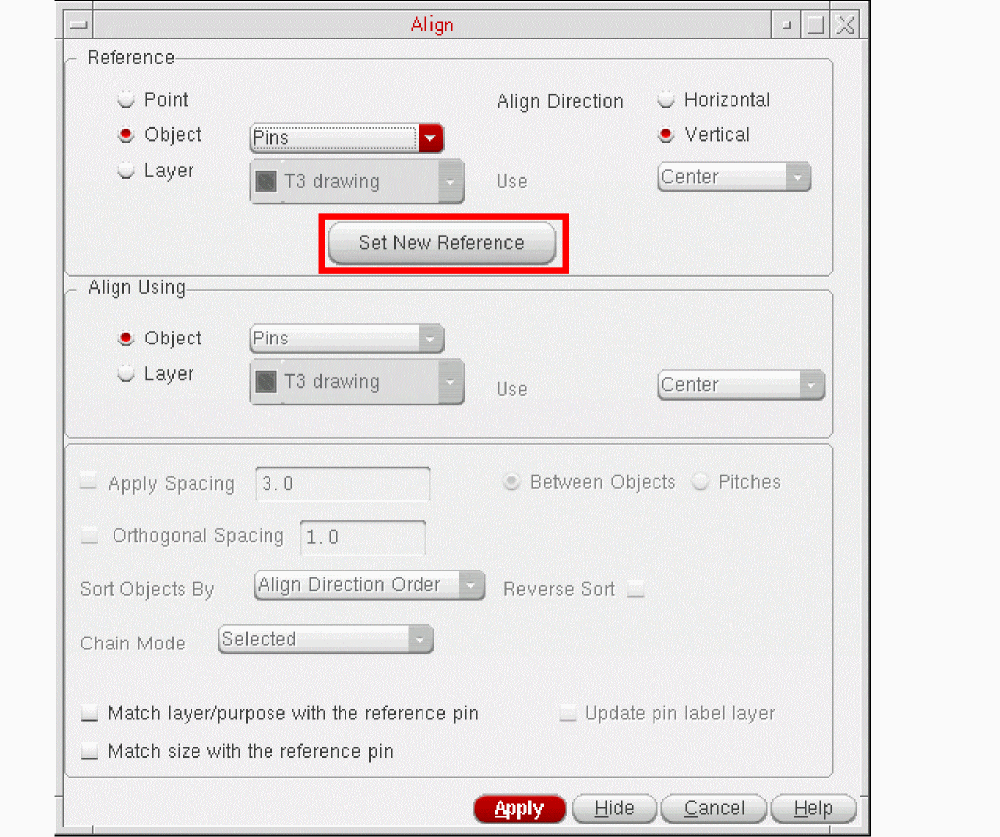 - If you want to change the target pin layer/purpose of the pin to the reference pin layer purpose, select the Match layer/purpose with the reference pin check box. For example, if the target pin is on Metal2 drawing layer purpose and the reference pin is on Metal1 drawing, then selecting this option will change the target pin layer to Metal1 drawing.
-
When the Match layer/purpose with the reference pin option is selected, the Update pin label layer option is also selected by default. In this state, the pin labels are placed on the same layer as the target pins. So, when a pin is moved to a different layer, the pin label is also moved to the same layer.
However, this option will work only if the purposes of the reference and target pins match.
Example 1:
Reference pin LPP= (Metal1 drawing)
Target pin LPP = (Metal2 drawing) - exists
Pin label’s layer will be updated to the target layer along with the pin.
Example 2:
Reference pin LPP= (Metal1 drawing)
Target pin LPP = (Metal2 drawing) – X does not exist
Pin label’s layer will be not be updated. Only the pin layer will be updated. -
If you want to change the target pin size to that of the reference pin, select the Match size with the reference pin check box. For example, if the target pin size is 0.6 x 0.6 and the reference pin size is 1.0 x 1.0 then selecting this option will change the target pin size to 0.6 x 0.6.
After aligning the pins, the pin aligner performs a post-process check to determine any overlaps:
If any overlap exists, then the pin aligner displays a warning message indicating the previous location, layer, term name, and new location.
For example, in the figure below, pins 1 to 5 of block B1 are connected to pins 1 to 5 of block B2, respectively. If you select all the pins of block B1 as the reference pins and the block B2 as the target block, the pins of block B2 are moved as shown in the figure marked b. Note that pin 1 of block B2 is not moved at all because no edge is available to get it aligned. Any target pin connected to a reference pin is moved to the first edge of the target block encountered by an imaginary line orthogonal to the reference pin edge.
If none of the imaginary orthogonal lines touch the target block, the pin will not be moved (for example, pin 1 in block B2).
If a reference pin is not on the edge or is on the corner (and has two edges) then out of two orthogonal imaginary lines, the one that hits the target edge point (see example below) is considered and the connected target pin is moved to this point. This may not be the closest point. In this figure, Blk2 is the reference and Blk1 the target. Pin 4 needs to be aligned. If imaginary orthogonal lines are drawn from the reference pin 4 to the target, three possible positions can be identified for pin 4 on the target block. these are marked as A, B and C. The target pin can be moved to any of these positions. Pin aligner chooses position A for the target pin for the best alignment although positions B and C could have helped reduce the net length.
Fixed pins (with status “firm” or “locked”) are not moved by the pin aligner. A message is given in CIW:
*Warning* Can not align pin <name> of instance <name>, as it is a <status> pin
The Pin Alignment command supports multiple reference pins connected to multiple target pins on the same net. It also considers if multiple target pins can be aligned to the same reference pin based on the closest edge criteria.
There are various cases in pin alignment some of which are described as follows. In the figures shown for various cases, the reference and target pins are shown as block pins but they can be top-level pins as well.
In this case, you select the pins in different blocks as the reference pins, which are connected to multiple pins in the same target block. The target pins are aligned as shown in the following figure.
In this case, you select multiple pins in the same block as reference pins, which are connected to multiple top-level pins. The target pins are aligned as shown in the following figure.
Case III - Reference in Same Block, Target in Different Blocks
In this case, you select multiple pins in the same block as reference pins, which are connected to multiple pins in different target blocks. The target pins are aligned as shown in the following figure.
Case IV - Reference in Different Blocks, Target in Different Blocks
In this case, you select the pins in different blocks as reference pins, which are connected to multiple pins in different target blocks. The target pins are aligned as shown in the following figure.
Case V - Multiple Target Pins Aligned with same Reference Pin
In this case, you select a pin in a reference block, which is connected to multiple pins in the same or different target block(s). The target pins in different block(s) are aligned as shown in the following figure.
Case VI - Multiple Top-level Pins Aligned with same Reference Pin
In this case, you select a single pin in the reference block, which is connected to multiple top-level pins in the prBoundary. The pins at the top-level are aligned as shown in the following figure.
Case VII - Alignment of pins when the block having Reference Pins is Rotated
In this case, when the block having reference pins is rotated by 90o, the pin aligner automatically and intelligently aligns the pins in the target block with the pins in the reference block to get the shortest net length.

The pin aligner ignores any selected item that is not a pin, a block or the top level PRBoundary. A message is given in CIW:
*Warning* Pin Alignment is not supported for object of type <type>
If the target block is not a soft block, its pins are not aligned. A message is given in CIW:
*Warning* Can not align pins of instance <name> as it is not a soft block.
If the target soft block does not have a PRBoundary, its pins are not aligned. A message is given in CIW:
*Warning* Can not align pins of instance %s as it does not have PRBoundary.
If the block to which the target pin belongs is outside the top-level design boundary, then the pin is aligned but not snapped to the grid. A message is given in CIW:
*Warning* Can not snap pin %s of instance %s as it is outside the design boundary.
After aligning the pins, a Pin Alignment report is displayed in the CIW. The Pin Alignment report provides a detailed listing of target pins that are not aligned, along with the reason for not aligning them.
Aligning Unconnected Bus Pins
The pin aligner lets you align unconnected bus pins. The selected target bus pins are aligned to the selected reference bus pins.
This feature is not available by default. To enable connectivity-independent alignment of bus pins, set the environment variable to t.
To align unconnected bus pins:
- Choose Edit – Advanced – Align. The Align form appears.
- Set Reference to Object and select Pins from the Object list.
- Set Align Using to Object.
-
Select Pins from the Object list.
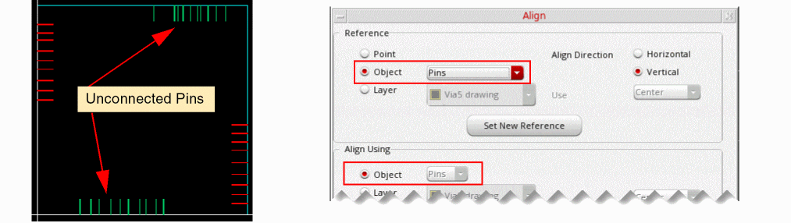 - Click Hide in the Align form.
- Select the reference bus pins on the design canvas.
- Click the middle mouse button to switch to the target selection mode.
- Select the target bus pins.
-
To mark the end of target selection, click the middle mouse button. Alternatively, return to the Align form and click Apply.
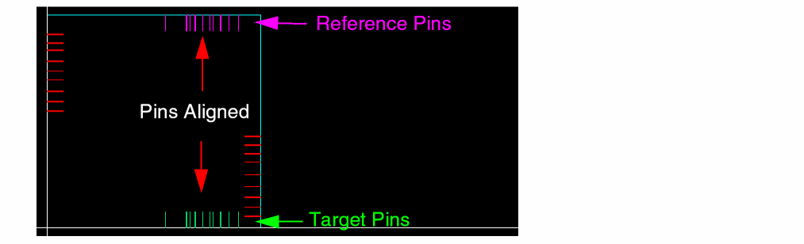
The target pins are aligned to the reference pins.
Mapping between the reference and target pins is based on their minimum and maximum bit numbers. For example, if you select the reference as net1<4:9> and target as net2<0:5>, the pin aligner derives the following mapping and aligns the pins accordingly:
net1<4> -> net2<0>
net1<5> -> net2<1>
net1<6> -> net2<2>
net1<7> -> net2<3>
net1<8> -> net2<4>
net1<9> -> net2<5>
If the number of selected reference and target bus pins do not match, the pin aligner aligns only those bus pin pairs for which both reference and target pins are selected.
Return to top